最近在有关NLP相关的内容，不知怎的居然逐渐投入到计算机语言的研究去了，特别是编译原理。看来自然语言和计算机语言也是有某种互通吧。看的东西很多也很杂。感觉好多知识都是似曾相识。不管怎样，先写一篇博客，稍稍记录一下我的学习成果。
parser是什么
从某种程度上来说，parser并不难。从整个编译技术栈来看，parser的地位非常靠前，它的结果很重要，难度却并不高。所谓 parser，一般是指把某种格式的文本（字符串）转换成某种数据结构的过程。最常见的 parser，是把程序文本转换成编译器内部的一种叫做“抽象语法树”（AST）的数据结构。也有简单一些的 parser，用于处理 CSV，JSON，XML 之类的格式。
语言
在讲语言之前，我们先引入下面两个概念:
字母表 字母表我们用\(\Sigma\)表示，是一个有穷的字符集合。比如对于英语，是一个26个字母(假设不分大小写)组成的字母表。又比如计算机常见的ASCII字符集。
符号串 由字母表中的符号组成的任何有穷序列称为符号串。串 s 的长度，通常记作 |s| ，是指 s 中符号的个数。例：|aab|=3。 空串是长度为 0 的串，用\(\epsilon\) 表示，\(|\epsilon|=0\)。
大体上语言可以分为形式语言和自然语言，在这篇文章中出现的语言都是指形式语言。形式语言（Formal Language）是为了特定应用而人为设计的语言。例如数学家用的数字和运算符号、化学家用的分子式等。编程语言也是一种形式语言，是专门设计用来表达计算过程的形式语言。
从字面上看，每个程序都是一个“基本符号”串，设有一基本符号串，那么编程语言可看成是在这个基本符号集上定义的，按一定规则构成的一切基本符号串组成的集合。
字母表相关的运算:
字母表与字母表的乘积 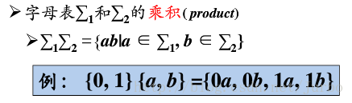
字母表的n次幂: 长度为n的符号串构成的集合 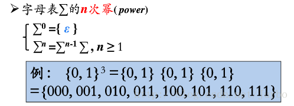
字母表的正闭包：长度正数的符号串构成的集合 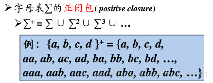
字母表的克林闭包：任意符号串（长度可以为零）构成的集合 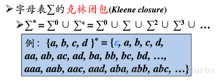
串的幂运算：将 n 个 串连接起来。 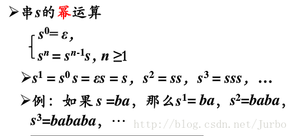
文法(语法)Grammer
文法是台湾地区的习惯用法。
语法的形式化定义
\(G=(V_T,V_N,P,S)\)
- G表示文法，文法由一个四元组定义
- \(V_T\): 终结符集合
- 终结符(terminal symbol)是文法所定义的语言的基本符号，有时也称为token。
- 例如：\(V_T = \{ a p p l e , b o y , e a t , l i t t l e \}\)
- \(V_N\)：非终结符集合
- 非终结符(nonterminal) 是用来表示语法成分的符号，有时也称为“语法变量
- 例如 \(V_N =\{<句子>,<名词短语>,<动词短语>,<名词>,…\}\)
- 因为从它们可以推出其他的语法成分，所以被称为非终结符
- 终结符集合和非终结符集合都是字母表
- 终结符集合与非终结符集合是不相交的，\(V_T \bigcap V_N = \phi\)
- 而终结符集合与非终结符集合的并集是文法符号集，\(V_T \bigcup V_N\): 文法符号集
- P：产生式集合，产生式描述了将终结符和非终结符组合成串的方法。
- 产生式的一般形式：\(\alpha \rightarrow{\beta}\)
- 读作：\(\alpha\) 定义为 \(\beta\)
- \(\alpha \in (V_T \cup V_N)^+\)且 \(\alpha\)中至少包含\(V_N\)中的一个元素：称为产生式的头(head)或左部(left side)。
- \(\beta \in (V_T \cup V_N)^*\) : 称为产生式的体（body）或者右部（right side）
- \(S \in V_N\) 开始符号表示的是该文法中最大的语法成分。
- 例如：S=<句子>
- a对一组有相同左部的\(\alpha\)产生式，\(\alpha \rightarrow \beta_1,\alpha \rightarrow \beta_2 .... \alpha \rightarrow \beta_n\) 可以简记 \(\alpha \rightarrow \beta_1 | \beta_2 |...|\beta_n\), \(\beta_1, \beta_2 ... \beta_n\) 被称作\(\alpha\)的候选式
符号约定
- 下列符号是终结符
- 字母表中排在前面的小写字母，如a、b、c
- 运算符，如+，*等
- 标点符号，如逗号，括号等
- 数字，0、1、2…、9
- 粗体字符串，如id、if等
- 下列符号是非终结符
- 字母表中排在前面的大写字母，如A、B、C
- 字母S，通常表示开始符号
- 小写、斜体的名字，如expr、stmt等
- 代表程序构造的大写字母。如E（表达式）、T（项）和F（因子）
- 字母表中排在后面的大写字母（如X、Y、Z）表示文法符号（即终结符或非终结符）
- 字母表中排在后面的小写字母（主要是u、v、…、z）表示终结符号串（包括空串）
- 小写希腊字母，如α 、β 、γ ，表示文法符号串（包括空串）
- 如非特别说明，第一个产生式的左部就是开始符号
推导和规约
在编译原理的总结之中，我们知道一个句子可能存在多种推导方式，所以我们约定两种特殊的推导方式（顺序），即最左推导和最右推导。句子的推导是我们从开始符号，推出我们想要的句子的过程。与之相反，拿到一个句子，我们反推回开始符号，这个过程是句子的规约。因此，最左推导和最右推导分别对应最右规约和最左规约。上述概念的形式化定义如下
最右推导（规范推导）： 对于直接推导 \(x \rightarrow y\)，如果y只包含终结符号或者为空符号串（相当于右边已经没有可以被拆分的非终结符了），那么，就把这种直接推导称为规范推导。
最左推导： 与最右推导相反。
最左规约： 为最右推导的逆过程，对于一个句子，每次都从最左端，可规约的符号或符号串（句柄）来规约。
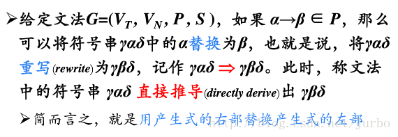
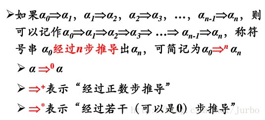
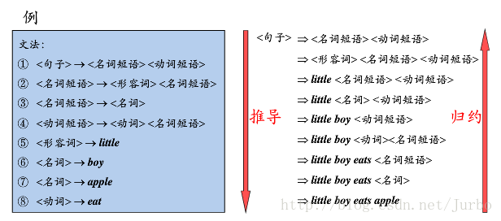
对于所有合法的推导过程，都能通过语法树的形式进行表示（多对一）。例如给定文法: E::= E＋E|E * E|(E)|i，那么对于一个句子 S = i + i * i 存在不同的规范推导 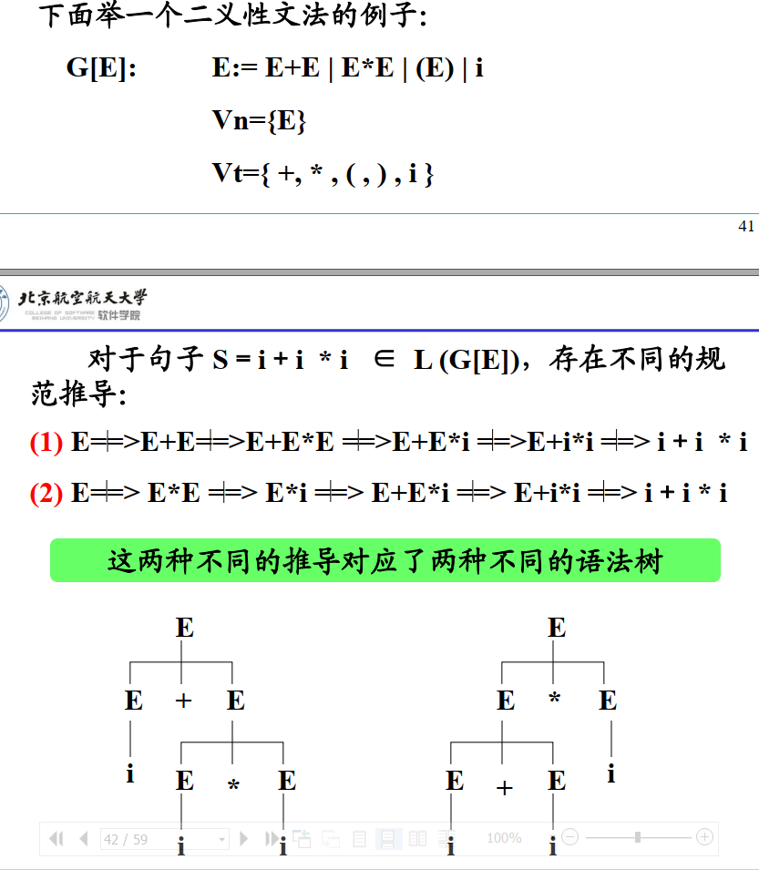
短语、简单短语与句柄
给定一个句子S（如i+i * i），找到它的短语、简单短语与句柄主要依靠其语法树。其中短语是语法树子树的所有叶节点组成的符号串，也就是说有多少个子树，就有多少个短语。简单短语是语法树简单子（高度为2）的所有叶节点组成的符号串。句柄是最左简单子树（高度为2）的所有叶节点组成的符号串。
我们不妨看上图左边的语法树。对于句子i + i * i，短语有i+i * i, i, i * i。简单短语有i（三个），句柄为最左边的i
所以短语 简单短语 句柄的定义如下
短语：一个句型的语法树中任一子树的叶节点所组成的符号串都是该句型的短语
简单短语: 一个句型的语法树中任一最小子树的叶节点所组成的符号串都是该句型的短语
句柄： 句柄是最左边的直接短语
给定一个句型，其分析树中的每一颗子树的边缘称为该句型的一个短语。
如果子树只有父子两代节点，那么这课子树的边缘称为该句型的一个直接短语。
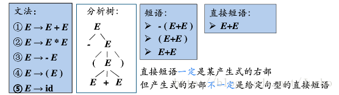
句型和句子
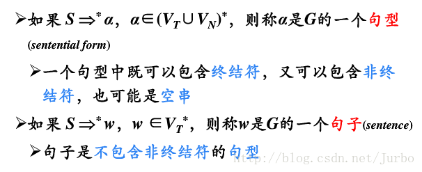
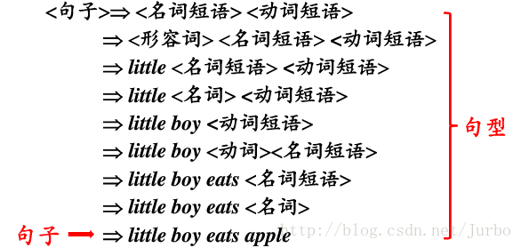
语言的形式化定义
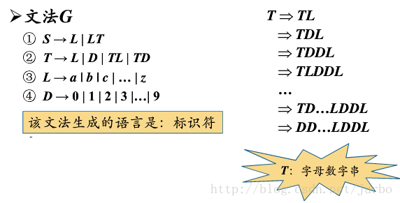
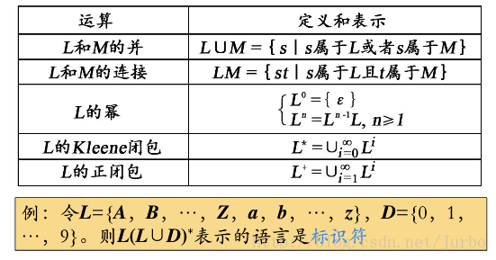
文法分类
0型文法，无限制文法
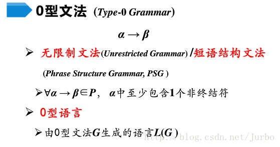
1型文法，上下文有关文法
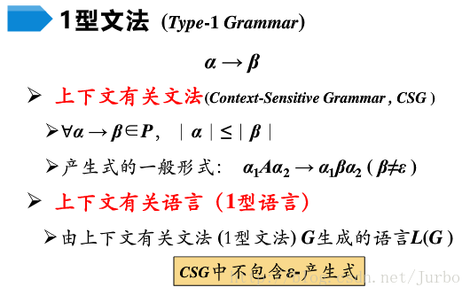
2型文法，上下文无关文法
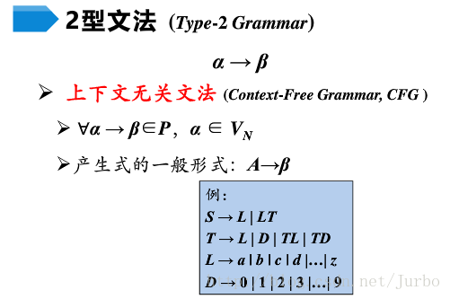
3型文法，正则文法
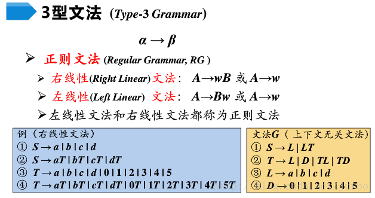
4种文法总结
0型文法 限制最少，其实就是，\(\rightarrow\)的左边，是非终结符和终结符的组合，由于终结符是有\(\epsilon\)这个空存在的，所以，这就相当于只要有一个非终结符，其他怎么样都行。\(rightarrow\)的右边，没有任何限制。
1型文法 1型加的限制就是，对任一产生式\(\alpha \rightarrow \beta\)，都有\(|\beta| >= |\alpha|\)， 仅仅 \(S \rightarrow \epsilon\) 除外，其生成式的一般表达式应该为：α1Aα2→α1βα2，A在终结符集合中，剩下的符号都是任意的（终结符和非终结符的集合）举个例子来说明：
A→aB S→abc bB→bc aB→bB
我们在上述例子的第一个规则中A→aB中，想把B给替换掉，但是我们发现，没有B→这样的规则，然而，聪明的我们又发现，有aB→这样的式子，所以我们就把aB替换成了bB，然后bB又可以替换成bc。 这其实就表达了这样一个意思，我要换这个B啊，必须得和他周围的东西一起换掉，就好像超市，B单独一个东西卖不出去，只有打包才行，所以，1型文法又称为上下文有关文法。
2型文法 2型文法的限制就是，→的左边，都只能存在一个非终结符，那种AA，aB，aBc之类的就不能存在了，左边必须单身狗，→的右边依旧很自由，什么都可以（终结符和非终结符的集合） 比如： A→aB
S→bAA B→a C→abA
大家会发现，当我要在A→aB中，把B替换掉的时候，由于存在B→a，所以直接就可以替换掉B，而不用在乎A→aB这个式子的B的旁边有没有别的东西，所以，2型文法又叫做上下文无关文法。
3型文法 又称为正规文法，它的限制可就十分之死板了，它只允许两种形式的产生式存在，一个是A→aB，一个是A向右a，A和B都是非终结符，a则是终结符。举个例子： S→aA
S→a A→bB A→b
反正就是只有两种格式(左线性文法 右线性文法)的式子允许存在，所以正规文法其实是很少的。
4种文法关系
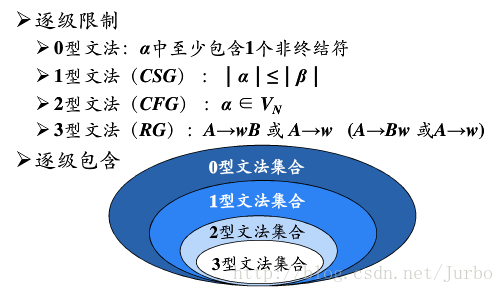
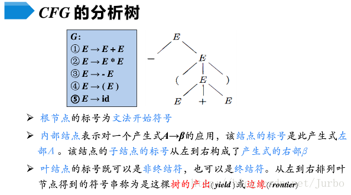
分析树是推导的图形化表示
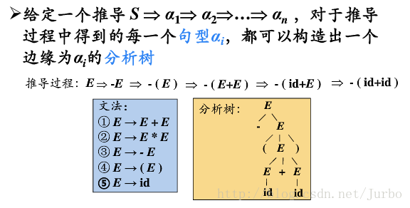
二义性文法
如果一个文法可以为某个句子生成多棵分析树，则称这个文法是二义性的。
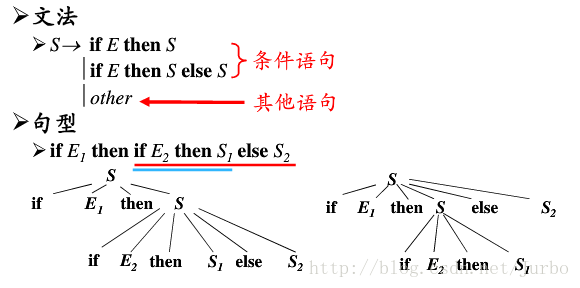
二义性文法的判定
对于任意一个上下文无关文法，不存在一个算法，判断它是无二义性的，但能给出一组充分条件，满足这组充分条件的文法是无二义性的。 * 满足，肯定无二义性 * 不满足，也未必就是有二义性的
基于Scala parser combinator实现parser
语法格式描述规范
BNF 是最原始，最简单的方法，主要用于理论背景的学术论文中，以与人类进行交流。（与在编译器/解析器中使用相反）。BNF 没有确切的规范。
EBNF 是 Extended BNF （扩展的BNF）的缩写。没有一个标准的 EBNF，因为每个作者或程序都定义了自己的稍有不同的 EBNF 变体。
ABNF 是 augmented BNF（增强型BNF）的缩写，ABNF 的语法 与 BNF 完全不同，但是更加标准化，利于解析器的翻译，但不利于阅读；
但是 BNF、EBNF、ABNF 这三者的表达能力是等效的；它们只是语法上的差异。
举例1：在传统的 BNF 中，左式 和 右式 的 分隔符（即：定义符）通常是::=，而在书籍中通常是 →，在 EBNF 和 ABNF 中是 =；
举例2：在传统的 BNF 中，非终结符用尖括号括起来，例如，
终结符不用加任何额外的符号，用普通字符表示即可。而在 ABNF 中，非终结符用普通字符表示，终结符需要用双引号括起来，例如"+" ； 举例3：在 BNF 和 EBNF 中，替代符号（选项符号）是 |，在 ABNF 中，替代符号是 /；
举例4：EBNF 和 ABNF 还具有快捷语法语法，比如指定 0个 或 多个 重复项。要将其用 BNF 表示，则需要引入更多规则。
BNF规则
| 符号 | 含义 | 举例 |
|---|---|---|
| ::= | 是“被定义为”的意思 | 示例：字符串 ::= 用引号包围的字符序列，表示 字符串 就是 用引号包围的字符序列 json ::= "{" [members] "}" |
| "..." | 终结符，即引号中的字符序列本身，并非指代其它字。而终结符双引号 " 用 double_quote 用来表示 | 示例：函数调用 ::= 名字 "()" 表示 函数的调用 是 由 名字 加上左右括号字符 () 组成 |
| 语法部分 | 示例：基本类型 ::= 字符串 | |
| <...> | 必选项 | 示例：名字 ::= [姓] <名> 表示 名字 中的 名 是必须要有的，但 姓 是可有可无的，即：姓 名 是 名字，名 也是 名字 |
| [...] | 可选，可有可无 | 示例：名字 ::= [姓] <名> 表示 名字 中的 名 是必须要有的，但 姓 是可有可无的，即：姓 名 是 名字，名 也是 名字 |
| {...} | 重复，0 或 任意次重复 | 示例：AB ::= "a" {"b"}，表示 AB 是由 一个 a 后面跟上任意数量（包括0个）个 b 组成，如 a、a b、a bb、a bbb |
| (...) | 分组，用来控制表达式的优先级 | 示例：AX ::= "a" ("m"|"n")，表示 AX 是由 一个 a 后面跟上 m 或 n 组成 |
| | | 替换，即 或 的意思 | 示例：布尔 ::= "true" | "false"，表示 true 或 false 都是 布尔 |
| ... | 表示各种列举或省略的代码片断 | 示例：a...z 表示 从 a 到 z 的字符，"..." 表示 由 双引号 " 包围起来的任意字符 |
基于BNF我们可以写出json的文法规则
1 | json ::= "{" [members] "}" |
EBNF
用 EBNF范式 来描述 EBNF 的语法
| 符号 | 含义 | 举例 |
|---|---|---|
| = | 定义 | 示例：字符串 = 用引号包围的字符序列，表示 字符串 就是 用引号包围的字符序列 |
| , | 串接 | 示例：张三= 'zhang', 'san' 表示 张三 是由 zhang 和 san 组成 |
| ; | 终止，表示一个定义语句结束了，在没有歧义的情况下可省略 | 示例：变量名字 = 标识符 ; 类型名字 = 标识符 |
| | | 替换，即 或 的意思 | 示例：布尔 = 'true' |
| [...] | 可选，可有可无 | 示例：名字 = [姓] 名 表示 名字 中的 姓 是可有可无的，即：姓 名 是 名字，名 也是 名字； |
| {...} | 重复，0 或 任意次重复 | 示例：AB = 'a' {'b'}，表示 AB 是由 一个 a 后面跟上任意数量（包括0个）个 b 组成，如 a、a b、a bb、a bbb |
| (...) | 分组，用来控制表达式的优先级 | 示例：AX = 'a' ('m'|'n')，表示 AX 是由 一个 a 后面跟上 m 或 n 组成 |
| '...' | 终结符，即引号中的字符序列本身，并非指代其它字 | 示例：函数调用 = 名字 '()' 表示 函数的调用 是 由 名字 加上左右括号字符 () 组成 |
| "..." | 终结符 | 同 '...' |
| (...) | 注释 | 说明性文本，不表示任何语法 |
| ?...? | 特殊序列 | |
| - | 排除 | 除去 |
EBNF语法
1 | 生成式 = 生成式名 '=' [ 表达式 ] [';'] ; |
生成式由表达式构造，表达式通过术语及以下操作符构造，自上而下优先级递增（低=>高):
1 | | 选择 |
增强型巴科斯范式ABNF
RFC2234 定义了增加型巴科斯范式(ABNF)。近年来在Internet的定义中 ABNF 被广泛使用。ABNF 做了更多的改进。增强型巴科斯-瑙尔范式(ABNF)基于了巴科斯-瑙尔范式(BNF)，但由它自己的语法和推导规则构成。这种元语言的发起原则是描述作为通信协议(双向规范)的语言的形式系统。它建档于 RFC 4234 中通常充当 IETF 通信协议的定义语言。
| 符号 | 含义 | 事例 |
|---|---|---|
| = | 规则 = 定义 | |
| 空白被用来分隔定义的各个元素 要使空格被识别为分割符则必须明确的包含它。 | ||
| 规则1 规则2 | 串联 规则可以通过列出一序列的规则名字来定义。 | fu = %x61; a bar = %x62; b mumble = fu bar fu |
| / | 选择 规则1 / 规则2 | fubar = fu / bar |
| 规则1 =/ 规则2 | 递增选择 可以通过使用在规则名字和定义之间的“=/”来向一个规则增加补充选择。 | ruleset = alt1 / alt2 / alt3 / alt4 / alt5 等价于 ruleset = alt1 / alt2 ruleset =/ alt3 ruleset =/ alt4 / alt5 |
| %c##-## | 数值范围可以通过使用连字符(“-”)来指定。 | OCTAL = "0" / "1" / "2" / "3" / "4" / "5" / "6" / "7" 等价于 OCTAL = %x30-37 |
| (规则1 规则2) | 元素可以放置在圆括号中来组合定义中的规则。 | 要匹配“elem fubar snafu”或“elem tarfu snafu”可以构造下列规则： group = elem (fubar / tarfu) snafu |
| n*m规则 | 规则重复最小n次 最大m次 |
上述操作符有从最紧绑定(binding)到最松绑定的给定优先级:
1 | 1. 字符串，名字形成(formation) |
scala parser combinator
在使用这个解析库时，只需要写出BNF，对照着翻译成代码，那么scala就会根据递归下降自动完成解析。非常方便，这种方便依赖于scala提供的pattern match。和BNF的对照关系见下表
| scala操作符号 | 含义 |
|---|---|
| ~ | 连接词，用于连接两个token，实际上是一个case类，定义：case class ~+a, +b |
| | | 或操作，和BNF中的|等同 |
| rep | 用于替换BNF中的大括号，该函数返回Parser[List]，此外还有一个rep1，和rep的区别是：rep表示0或多个，而rep1是一或多个 |
| ^^ | 转换parser的结果，即^^后面的函数处理parser解析的值，可以理解为map函数 |
| <~ | 提取器，因为 '~' 会出现在字面量中，需要进一步case匹配对应的 '~' ，为提取更快捷，提供 '~>' 用于提取右边的结果、'<~'提取其左边的结果，一般配对使用 |
1 | import scala.collection.Map |
又比如一个加减乘除计算器
1 | import scala.collection.Map |
Generator
相比于parser，generator就简单多了，还是充分利用pattern match的特性 1
2
3
4
5
6
7
8
9
10
11
12
13def foo(x: Any): String = {
x match {
case j: Map[String, Any] => "{" + j.map { case (k, v) => "\"" + k + "\"" + ":" + foo(v) }.mkString(",") + "}"
case j: List[Any] => "[" + j.map(v => foo(v)).mkString(",") + "]"
case null => "null"
case j: String => "\"" + j + "\""
case _ => x.toString
}
}
val m = Map("1" -> List(2.0, 3.0), "2" -> List(Map("3" -> true, "5" -> null), 2.0, 3.0, "asfasf"))
//val m = List(1, 2, 3)
println(m, foo(m))
小结
- 四种文法定义以及关系
- 描述文法的方法有BNF，EBNF，ABNF
- 写出某文法的BNF表达式，并基于scala parser combinator 即可开发出相应的parser
- parser 和generator 都是充分使用了scala的pattern match
参考: